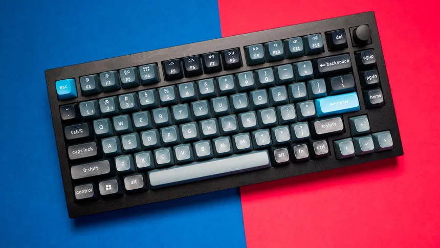
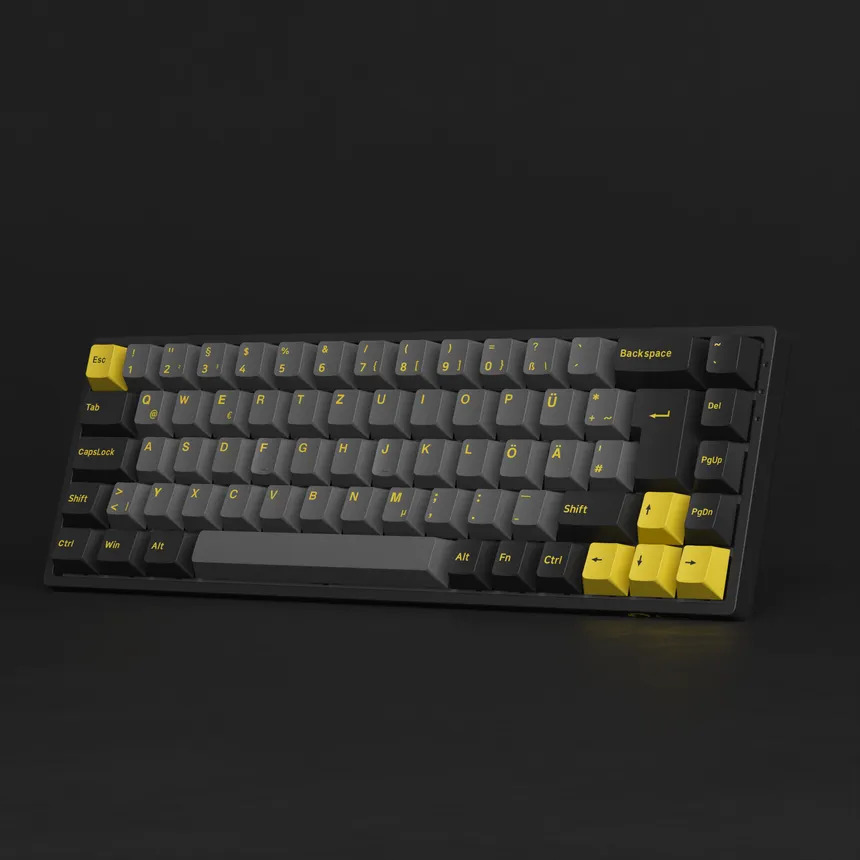
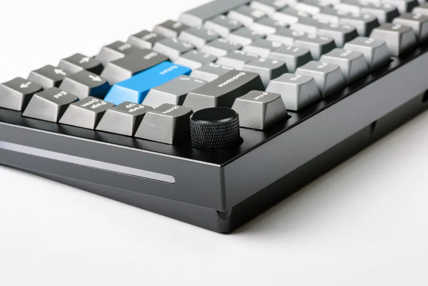
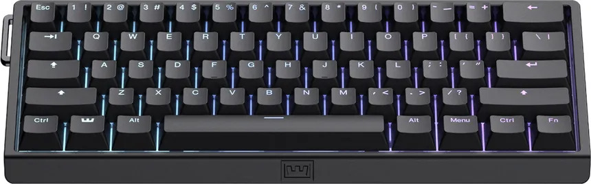

Keychron Q1 Pro

Keychron Q1 Pro - Conexión inalámbrica, formato 75% y chasis de aluminio.
Bienvenido a nuestra tienda. Seleccionamos componentes de alta calidad y switches lubricados a mano para ofrecer la mejor experiencia de escritura.

Keychron Q1 Pro - Conexión inalámbrica, formato 75% y chasis de aluminio.

Akko 3068B Plus - Formato compacto 65% con switches táctiles.

GMMK Pro - Placa Gasket mount y selector giratorio de volumen.

Wooting 60HE v2 - Chasis de aluminio y teclas PBT duraderas.
| Nombre | Descripción | Especificaciones | Precio |
|---|---|---|---|
| Keychron Q1 Pro | Conexión inalámbrica y chasis de aluminio. | 75%, inalámbrica | 228.99 € |
| Formato 75% con construcción premium. | Aluminio, QMK/VIA | 228.99 € | |
| Akko 3068B Plus | Formato compacto con switches táctiles. | 65%, inalámbrica | 107.09 € |
| GMMK Pro | Placa Gasket mount y selector giratorio. | 75%, cable | 229.99 € |
| Wooting 60HE v2 | Chasis de aluminio y teclas PBT. | 60%, cable | 174.99 € |
| Precio total | 741.06 € | ||
En mi opinión, un buen teclado mecánico puede mejorar la comodidad y la experiencia al escribir.
La elección de los switches, el tamaño y los materiales depende de las preferencias y necesidades de cada usuario.
Opinión personal del autor del catálogo